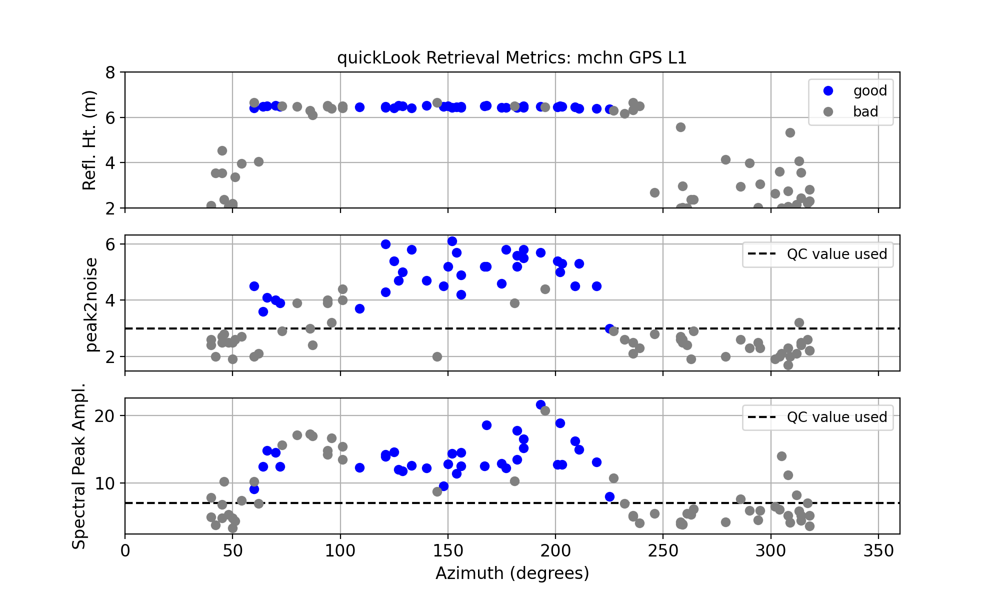
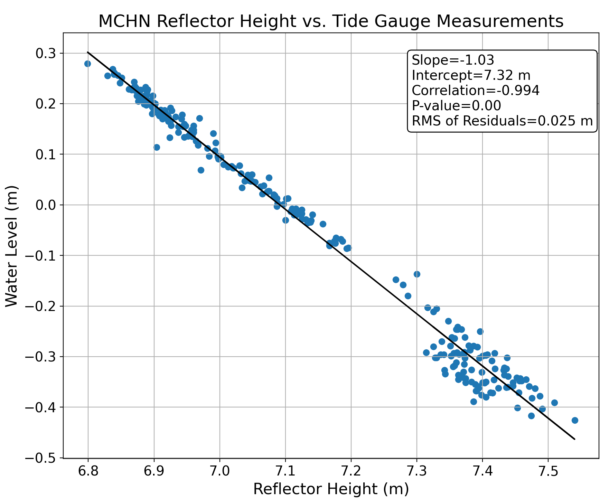

Michipicoten, Lake Superior
Station Name: mchn
Location: Michipicoten Harbor, Ontario, Canada
Archive: SOPAC
Ellipsoidal Coordinates:
Latitude: 47.961
Longitude: -84.901
Height: 152.019 m
Station Page at Natural Resources Canada
Station Page at Nevada Geodetic Laboratory

Data Summary
Station mchn is operated by NRCAN. The station overlooks Lake Superior in a favorable location for measuring seasonal water levels. This site only tracks legacy GPS signals.
More information on mchn can be obtained from the GNSS-IR Web App, where mchn is one of the test cases.
For GNSS reflectometry, you need to set an azimuth and elevation angle mask. The azimuths are chosen to ensure that the reflected signals reflect off the surface of interest. Here is a good start on an elevation and azimuth angle mask.
Reproduce the Web App
Make SNR File
If you know where the data are stored (i.e. sopac), it is better (faster) to set that flag. Since the receiver only tracks GPS signals, there is no need to specify gnss orbits.
rinex2snr mchn 2019 205 -archive sopac
Take a Quick Look at the Data
Examine the spectral characteristics of the SNR data for the default settings (For details on quickLook output.):
quickLook mchn 2019 205
{kind=link}
Why does this not look like the results from the web app? Look closely at the station photo and the x-axis of the periodograms, then change the range of reflector heights at the command line for quickLook:
quickLook mchn 2019 205 -h1 2 -h2 8

Also look at the QC metrics:
{kind=link}
The water is ~6.5 meters below the antenna. You can see from the top plot that the good retrievals (in blue) very clearly show you which azimuths are acceptable and which are not. The middle plot shows the peak to noise ratio, which we would like to at least exceed 3. And here again, the bad retrievals are always below this level. The amplitudes in the bottom plot indicate that 8 is an acceptable minimal value.
Analyze the Data
The data from 2013 will be analyzed here as a test case. Begin by generating the SNR files:
rinex2snr mchn 2013 1 -archive sopac -doy_end 365
The resulting SNR files are stored in $REFL_CODE/2013/snr/mchn.
Analysis parameters are set up with make_json_input
make_json_input mchn 47.961 -84.901 152.019 -h1 3 -h2 10 -e1 5 -e2 25 -l1 True -peak2noise 3 -ampl 8
Sample json file While most of the analysis settings can be done by the command line, you can see that the azimuths have been set by hand to be limited to 80-180 degrees. Although it is possible to get good reflections beyond 180 degrees, the photographs suggest barriers are present in that region.
Now that the analysis parameters are set, run gnssir to save the reflector height (RH) output for each day in 2013.
gnssir mchn 2013 1 -doy_end 365
The daily output files are stored in $REFL_CODE/2013/results/mchn. Here is an example output for a single day. Plots of SNR data can be seen with the -plt option.
gnssir mchn 2013 195 -plt True

For a lake, it is appropriate to use the daily average. Our utility for computing a daily average requires a value for the median filter and a minimum number of tracks. If the median value is set to the be large (2 meters), you can see large outliers:
daily_avg mchn 2 10

A more reasonable result is obtained with a 0.25-meter median filter and the 12-track requirement. If you want to save the daily averages to a specific file, use the -txtfile option. Otherwise it will use a default location (which is printed to the screen)
daily_avg mchn 0.25 12 -txtfile mchn-dailyavg.txt

The number of tracks required will depend on the site. Here the azimuth is restricted because of the location of the antenna. Please note that these reflections are from ice in the winter and water during the summer. Surface bias corrections (ice, snow) will be implemented in the software in the future. Until then, please take this into account when interpreting the results.
There is a tide gauge at this site. The data can be downloaded from this link. Please select the daily mean water level, as there are restrictions on hourly data (more information is available on the download page). We have downloaded the 2013 data.
The water levels measured by the traditional tide gauge and GNSS-IR are shown here:

The linear regression between the two series gives a slope m=-1.03. The rms of the residuals is very good, 0.025 m.
{kind=link}
The python script used to generate these plots is provided.
Reference
DFO (2021). Institute of Ocean Sciences Data Archive. Ocean Sciences Division. Department of Fisheries and Oceans Canada. http://www.pac.dfo-mpo.gc.ca/science/oceans/data-donnees/index-eng.html. Data obtained on 2021-01-28.